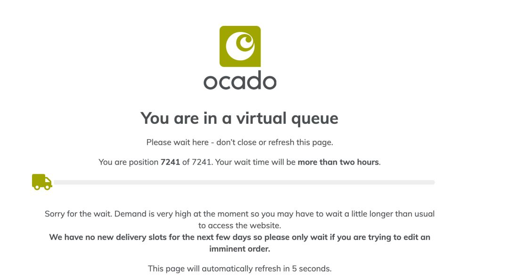
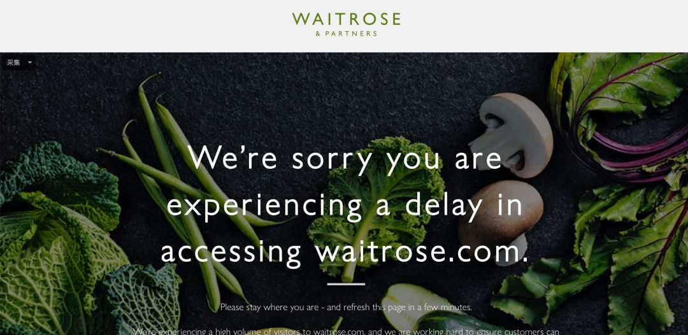
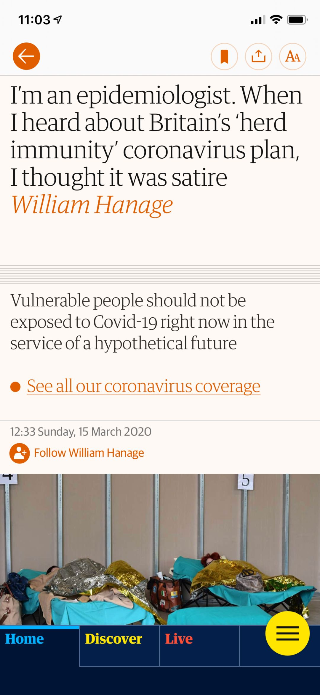
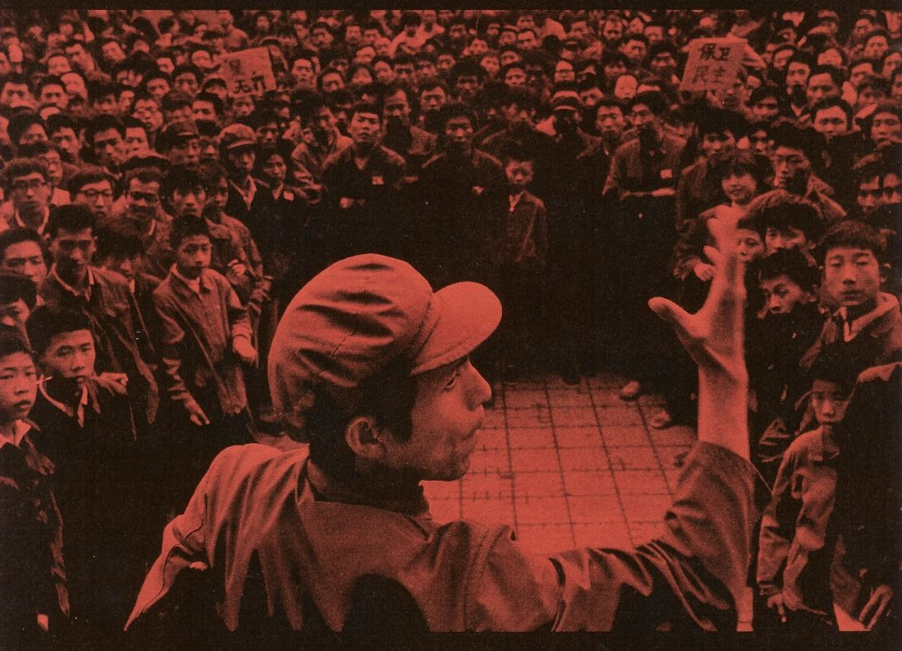

英国“隔离”日记 || 3月13日~17日：私人化的记录与感激
原文链接 备份链接 今天是3月18日，月相为29%的残月。 It is March 18 with a 29 percent of Waning Crescent. 距离新月还有 6 天。 There are 6 days until …

今天是3月18日，月相为29%的残月。
It is March 18 with a 29 percent of Waning Crescent.
距离新月还有 6 天。
There are 6 days until New Moon.
文 || 白清扬
“我要永远这样陪伴着你，
因为我最知道你的痛苦。”
《一块红布》，崔健
一
学着做了牛排饭，米饭做了太多，酱汁准备的实在少了些，并没有成功模仿那些美食博主将浓郁的汤汁均匀倒在米饭上的美艳场景。博主说酱汁的配方应是一勺日式酱油、一勺清酒配上一勺“味啉”。我一个都没有，所以我换成了生抽、料酒、白糖和水。说实话，我现在都不知道“味啉”是什么，要不是博主贴心地补充了“可用白糖加水代替”，我可能就半途而废了。
虽然没有一个调料出自原配方，但我尝了一口还是惊喜地发现，这饭或多或少有了一点“吉野家”的味道。我其实并不想用“吉野家”来形容日式丼的香浓滋味，但我实在想不出有什么简单粗暴的形容词可以让读者立刻明白那种味道。说起来，我也有两三年没有吃过吉野家了。
二
如今逐渐理解了为什么大家长大以后需要找个人伴着一起生活，无论是何性别，无论结婚与否。一个人居家生活实在有诸多不便，更不用说隔离了。从买菜、切菜、准备食材到做饭，还有饭后的洗碗、擦桌子、擦地全都一揽子扛在肩上。所谓效率太低，大概就是七点不到出门买菜，等再坐到书桌前，已将将过了九点。这对于一个患有重度论文焦虑症的人而言，实在不利于心理健康。然而，非常时期，出门找“饭辙”或者点外卖的可靠程度双双下跌，做饭便成为实际上的唯一选择了。
今天下午和父母视频，二老说看得出来我对去超市有一种莫名的恐惧。我说对。我想这是一种很复杂的纠结情绪。不想早起去刚刚上货的超市（估计我也起不来）；不想在白天去，因为我实在不想在光天化日之下作那大街上唯一一个戴口罩的人；也担心去了超市，自己想要的食材早已抢购一空；更不想仅仅因为去一趟超市就浪费一副口罩。所以我的首要选择是网购。虽然我在昨天的文章中提到，“朋友告诉我网上超市的送货日期已经排到了四月份”，我还是抱着侥幸心理逐一拜访了英国各大超市的官方网站。结果千奇百怪，让我意识到原来英国人背地里已经如此恐慌了。
Ocado作为英国最大且唯一只做线上的网络超市，在我点进网站后显示了一个等待界面。我排在第7241位。如果我想进入超市购物，需要排队两个多小时。我闻所未闻，以前从来不知道网络购物还需要排队。换到Amazon Fresh，在我选好了食材以后才发现一直到我四月份离开英国，都没有可以选择的送货时间了。Marks & Spencer的网络超市看得我丈二和尚摸不着头脑，转了一圈也没有找到蔬菜生鲜。而Waitrose最绝：它的官网干脆崩溃了。

△ Ocado的等待界面……

△ Waitrose干脆崩溃了。
三
打开冰箱，我看着这弹尽粮绝的后勤发愁。朋友说我们还需要保持作战状态两个星期，那我无论如何也需要上货了。把心一横，套上大衣、穿上鞋、戴好口罩，在附近的大超市关门以前冲了进去。
货架果然空了太半。不知是否不对英国人胃口，我喜出望外地发现番茄、黄瓜、生菜、鸡胸肉、蟹肉棒和葱姜蒜都还有存箱。然而，酒精消毒湿巾没了。一盆冷水浇到头上，这是我隔离生活最重要的必需品之一啊！每天早上起床，洗漱以后，坐到书桌前的第一件事一定是用湿巾将电脑与手机仔仔细细擦上一遍。此时此刻，当我写到这里时，我那一袋存货还剩最后一张，这意味着我明天无论如何都要买到新的湿巾。
四
回家的路上打开手机，啼笑皆非地发现由于我走路的速度太快，手机以为我在开车，取消了所有消息提醒。的确感觉后背微微出汗，大概也是想快点回到家里。无论如何，作为大街上唯一一个戴着口罩的人，我多少还是感觉有一点不舒服。

△ ”我们都要完蛋。“来源：Martin Rowson / The Guardian.
叶子风形容德国人的抗疫态度是一种焦虑与不屑纠缠不清的矛盾集合体。伦敦人几乎一样。口罩打死不戴，家门坚决要出；与此同时，超市里的货架却早早被搬空了。如果内里是焦虑的，为什么要在表面装出一副不屑的态度呢？我不明白。
五
事实上，我本来想在今天的日记里记录一下这两天逐渐高涨的愤怒情绪。
昨天晚上洗澡前，朋友圈刷出了一个伦敦的朋友，转发了“社会学家”何越为“群体免疫”政策洗地的文章，“呼吁”大家“理性”思考问题，不要“盲目批判”。我当时的第一反应是把哈佛医学教授威廉·哈纳奇发表在《卫报》上批判“群体免疫政策”的文章转发给她；随后又想把专业期刊《柳叶刀》对于该政策的质问转发给她。但随后转念一想，或许人家是装傻呢，那你转发也没用；同理，如果人家是真傻，那你转发就更没用。想明白了以后，虽然因愚蠢的人而愤怒的情绪还是无法消解，我却也打消了给她评论的念头，随手一个屏蔽了事。如果评论，想必又要纠缠着辩论到深夜，最后搞得满腔怒火也没法好好睡觉。何必呢。

△ 哈佛医学教授威廉·哈纳奇发表在《卫报》上嘲讽“群体免疫”的文章。
我似乎应该改一改这种太希望“启蒙”他人的毛病。说来好笑，我自己没准也是一个傻子，也需要被启蒙。启蒙他人又从何说起？甘阳说从鸦片战争开始，启蒙的重担就压在了中国知识分子的肩上。许纪霖也说过相似的话。四十年前黄翔、北岛等人在民主墙前高声疾呼，也是为了启蒙。可到头来呢？蒙启了吗？没有呀。更何况，看看昨天晚上特朗普的推特吧——你说西方社会完成大众启蒙了吗？没有呀。

△ “星星画展”（1979）主理人之一，“今天派”画家马德升在民主墙前演讲。来源：《今天》。
△ 1980年由《今天》、“星星”画派、《沃土》等策划的游行，旨在启蒙。来源：《今天四十年》。
所以呀，做好自己吧——我这么对自己说。闭上嘴，少说话，多读书，难得隔离，多写论文，少生气。别人没资格启蒙你，你估计也没啥资格启蒙别人。本本分分地隔自己的离，挺好的。

往期英国日记
3月16日：第一节网课，老师像往常一样来到教室（白清扬）
3月15日：我向外卖包装袋上喷了三次酒精喷雾（白清扬）
3月14日：我决定记录未来每一个无聊的日子（白清扬）
白清扬往期文章
散文 || 嫁给怒放的青春
杂文 || 肖战极端粉丝做错了三件事
批评/杂文 || 中华文明璀璨的诗歌文化是指引我们的唯一向导
杂文 || 让我们的声音，成为推动历史前进的声音
抗疫特辑 || 不要让造谣与攻击成为群众唯一的权力
「月亮沙龙」本期话题
点击链接，进入文章参加投票与讨论。
欢迎各位在后台留言，与我们进行交流。
读者的留言将会在每周的沙龙总结推送中呈现。
责任编辑、排版：白清扬。
封面图、首图、尾图：唐颂。

纵队队长
长按二维码向我转账
受苹果公司新规定影响，微信 iOS 版的赞赏功能被关闭，可通过二维码转账支持公众号。
原文链接 备份链接 今天是3月18日，月相为29%的残月。 It is March 18 with a 29 percent of Waning Crescent. 距离新月还有 6 天。 There are 6 days until …
原文链接 备份链接 今天是3月15日，月相为60%的下弦月。 It is March 15 with a 60 percent of Last Quarter. 距离新月还有 9 天。 There are 9 days until New …
原文链接 备份链接 她希望疫情快点过去。咳嗽时身边的人不再躲闪；出入小区时不用再带上好几张证件；每天早上开门时，第一眼见到的仍旧是对鸡蛋“虎视眈眈”的大爷大妈。 配图 | Sipa图片社 程姐是我几年前在江苏超市做收银员时的同事。她做事勤 …
原文链接 备份链接 若干年后回望，这一定是一段值得铭记的日子。因为新冠肺炎疫情，许多家庭无法团圆。疫情数据地图的每次刷新都令人揪心。我们和千万武汉人在一起，这不只是一句安慰，因为没有人能够置身事外。 之前，我们向用户征集这段时间的故事， …
原文链接 备份链接 “ - 疫 情 之 下 - 疫情没有结束，我们的工作仍在继续。在这场“战疫”中，我们的付出终有所获，经营户对我们的理解，人民群众对我们的信任，鼓舞着我们在疫情蔓延的环境下不断向前。 ” 我的朋友是一名市场监督管理所的 …